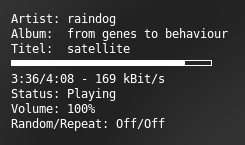
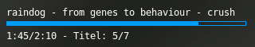
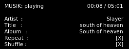

Audio-Anzeigen
Dieser Artikel wurde für die folgenden Ubuntu-Versionen getestet:
Dieser Artikel ist mit keiner aktuell unterstützten Ubuntu-Version getestet! Bitte diesen Artikel testen und das getestet-Tag entsprechend anpassen.
Zum Verständnis dieses Artikels sind folgende Seiten hilfreich:
Conky kann von einigen Audioplayern Daten auf dem Desktop anzeigen [1]. Der Umfang der Anzeigen ist je nach Audioplayer unterschiedlich. Anzeigen für den Music Player Daemon und einige schlanke Audioplayer werden von Haus aus unterstützt, für weitere Audioplayer gibt es Skripte [2].
Die Unterstützung für MPD und moc ist in allen Ubuntu-Paketen aktiviert. Für die Unterstützung von xmms2, BMPx und Audacious muss das Programm wie in einem eigenen Artikel beschrieben kompiliert werden. Das Conky Hardcore PPA bietet paketierte Skripte für Rhythmbox, Banshee und Exaile. Weitere Skripte für Amarok findet man in diesem Artikel.
MPD¶
Conky kann ohne zusätzliche Skripte viele Daten des Music Player Daemon auslesen. Die Unterstützung für den MPD ist in allen Ubuntu-Paketversionen gegeben.
Einstellungen¶
Im Konfigurationsabschnitt der .conkyrc müssen dafür die Verbindungsdaten zum MPD-Server angegeben werden:
mpd_host HOSTNAME #z.B.: localhost mpd_port PORT #Standard: 6600 mpd_password PASSWORT #kann man weglassen, wenn keine Passwort benötigt wird
Anzeige¶
Folgendes Beispiel eines TEXT-Abschnittes für MPD-Anzeigen setzt natürlich einen Konfigurationsabschnitt mit korrekten Verbindungsdaten voraus.
TEXT
Artist: ${mpd_artist}
Album: ${mpd_album}
Titel: ${mpd_title}
${mpd_bar 5,200}
${mpd_elapsed}/${mpd_length} - ${mpd_bitrate} kBit/s
Status: ${mpd_status}
Volume: ${mpd_vol}%
Random/Repeat: ${mpd_random}/${mpd_repeat}Im TEXT-Abschnitt können weitere Variablen genutzt werden, die den MPD betreffen: 
| Variable | Verwendung |
if_mpd_playing | Spielt MPD zurzeit Musik? |
mpd_artist | Artist des laufenden Titels |
mpd_album | Album des laufenden Titels |
mpd_bar (Höhe),(Breite) | MPD-Prozess-Bar |
mpd_bitrate | Bitrate des laufenden Titels |
mpd_status | MPD-Status: Playing, stopped, usw. |
mpd_title (max. Länge) | Titel des laufenden MPD-Songs |
mpd_vol | Lautstärke des MPD |
mpd_elapsed | Abgelaufene Zeit des Titels |
mpd_length | Länge des Titels |
mpd_percent | Abgelaufene Zeit des Songs in Prozent |
mpd_random | Zufall-Status (On/Off) |
mpd_repeat | Wiederholungs-Status (On/Off) |
mpd_track | MPD Track Nummer |
mpd_name | MPD Namen |
mpd_file | Dateinamen des MPD Songs |
mpd_smart | MPD Artist und Titel oder Artist und Name, je nach Verfügbarkeit |
Audacious¶
 Um die Informationen des Audacious-Audioplayers anzuzeigen, muss das Programm wie in einem eigenen Artikel beschrieben kompiliert werden.
Folgendes einfaches Beispiel eines TEXT-Abschnittes für die Anzeige der Audacious-Informationen setzt einen Konfigurationsabschnitt mit den üblichen Einstellungen voraus.
TEXT
${audacious_title}
${color #009bf9}${audacious_bar 5,300}$color
${audacious_position}/${audacious_length} - Titel: ${audacious_playlist_position}/${audacious_playlist_length}Im TEXT-Abschnitt können weitere Variablen genutzt werden, die Audacious betreffen:
| Parameter | Argument | Funktion |
audacious_bar | Höhe, Breite | Prozess-Anzeige als Leiste |
audacious_bitrate | Bitrate des aktuellen Titels | |
audacious_channels | Anzahl der Kanäle des aktuellen Titels | |
audacious_filename | Voller Pfad und Dateiname des aktuellen Titels | |
audacious_frequency | Samplerate des aktuellen Titels | |
audacious_length | Länge des aktuellen Titels in der Form "MM:SS" | |
audacious_length_seconds | Länge des aktuellen Titels in Sekunden | |
audacious_playlist_position | Position des aktuellen Titels in der Playliste | |
audacious_playlist_length | Anzahl der Titel in der Playlliste | |
audacious_position | Position des aktuellen Titels ("MM:SS") | |
audacious_position_seconds | Position des aktuellen Titels in Sekunden | |
audacious_status | Player Status ("Playing" / "Paused" / "Stopped" / "Not running" ) | |
audacious_title | Max. Länge | Aktueller Titel mit optionaler Begrenzung der Länge |
Amarok¶
Um Informationen des abgespielten Titels aus Amarok über ein Skript abzufragen [2], muss folgendes Paket installiert werden:
libqt4-dbus
 mit apturl
mit apturl
Paketliste zum Kopieren:
sudo apt-get install libqt4-dbus
sudo aptitude install libqt4-dbus
Das Skript muss unter ~/.conky/amarok2 gespeichert werden. Um es nutzen zu können, kann der Text-Abschnitt wie folgt aussehen:
TEXT
$stippled_hr${if_running amarok}
Interpret:$alignr${execi 10 ~/.conky/amarok2 artist}
Titel:$alignr${execi 10 ~/.conky/amarok2 title}
Länge:$alignr${execi 10 ~/.conky/amarok2 time} / ${execi 10 ~/.conky/amarok2 totaltime}
${execibar 10 ~/.conky/amarok2 progress}
Album:$alignr${execi 10 ~/.conky/amarok2 album}
Genre:$alignr${execi 10 ~/.conky/amarok2 genre}
$endif$stippled_hrBanshee¶
Das Conky-Banshee-Python-Skript kann wie unter Conky Hardcore PPA beschrieben installiert werden.
Um das Skript nutzen zu können, kann der Text-Abschnitt wie folgt aussehen:
TEXT
$stippled_hr$
Interpret:$alignr${execi 10 conkyBanshee --datatype=AR}
Titel:$alignr${execi 10 conkyBanshee --datatype=TI}
Länge:$alignr${execi 10 conkyBanshee --datatype=PT} / ${execi 10 conkyBanshee --datatype=LE}
${execibar 10 conkyBanshee --datatype=PP}
Album:$alignr${execi 10 conkyBanshee --datatype=AL}
Genre:$alignr${execi 10 conkyBanshee --datatype=GE}
$stippled_hrExaile¶
Das Conky-Exaile-Python-Skript kann wie unter Conky Hardcore PPA beschrieben installiert werden.
Um das Skript nutzen zu können, kann der Text-Abschnitt wie folgt aussehen:
TEXT
$stippled_hr
Interpret:$alignr${execi 10 conkyExaile --datatype=AR}
Titel:$alignr${execi 10 conkyExaile --datatype=TI}
Länge:$alignr${execi 10 conkyExaile --datatype=PT} / ${execi 10 conkyExaile --datatype=LE}
${execibar 10 conkyExaile --datatype=PP}
Album:$alignr${execi 10 conkyExaile --datatype=AL}
Genre:$alignr${execi 10 conkyExaile --datatype=GE}
$stippled_hrQuodlibet¶
Auch Quod Libet kann mit Conky benutzt werden. Dafür muss man allerdings einen kleinen Umweg über die Datei ~/.quodlibet/current gehen, in die Quodlibet den gerade gespielten Song schreibt. Ein Beispiel für den entsprechenden Abschnitt der .conkyrc sieht wie folgt aus:
${if_existing /<path to your home directory>/.quodlibet/current}
${exec quodlibet --print-playing "<artist>"}
${scroll 50 ${exec quodlibet --print-playing "<title~album>"} }
${endif}cmus¶
 Mit Hilfe von cmus-remote, grep und cut kann cmus mit Conky benutzt werden.
Um die Dauer anzuzeigen, benötigt man ein kleines Skript, das man unter ~/.conky/cmus-time.sh speichert.
1 2 3 4 5 6 7 8 9 10 11 12 13 14 15 16 17 18 19 20 21 22 23 24 25 26 27 28 29 30 31 32 33 34 35 36 37 38 39 40 41 42 43 44 45 | #!/bin/bash TMP=$(cmus-remote -Q | grep duration | cut -c 10-) let MIN=TMP/60 let SEK=TMP%60 if [ $MIN -gt 9 ]; then MIN=$MIN elif [ $MIN -lt 1 ]; then MIN="00" else MIN="0$MIN" fi if [ $SEK -gt 9 ]; then SEK=$SEK elif [ $SEK -lcmust 1 ]; then SEK="00" else SEK="0$SEK" fi DURATION=$MIN:$SEK TMP=$(cmus-remote -Q | grep position | cut -c 10-) let MIN=$TMP/60 let SEK=$TMP%60 if [ $MIN -gt 9 ]; then MIN=$MIN elif [ $MIN -lt 1 ]; then MIN="00" else MIN="0$MIN" fi if [ $SEK -gt 9 ]; then SEK=$SEK elif [ $SEK -lt 1 ]; then SEK="00" else SEK="0$SEK" fi POSITION=$MIN:$SEK echo "$POSITION / $DURATION" |
Das gleiche gilt für repeat und shuffle
~/.conky/cmus-repeat.sh
1 2 3 4 5 6 7 8 9 | #!/bin/bash REPEAT=$(cmus-remote -Q | grep " repeat " | cut -c 12-) if [ "$REPEAT" == "true" ]; then echo "[X]" else echo "[]" fi |
~/.conky/cmus-shuffle.sh
1 2 3 4 5 6 7 8 9 | #!/bin/bash SHUFFLE=$(cmus-remote -Q | grep " shuffle " | cut -c 13-) if [ "$SHUFFLE" == "true" ]; then echo "[X]" else echo "[ ]" fi |
Nun kann man wie unten cmus in Conky integrieren.
TEXT
MUSIK: ${execi 1 cmus-remote -Q | grep "status " | cut -c 8-} ${alignr} ${execi 1 ~/.conky/cmus-time.sh}
Artist : ${alignr} ${execi 1 cmus-remote -Q | grep " artist " | cut -c 11-}
Title : ${alignr} ${execi 1 cmus-remote -Q | grep " title " | cut -c 11-}
Album : ${alignr} ${execi 1 cmus-remote -Q | grep " album " | cut -c 11-}
Repeat : ${alignr} ${execi 1 ~/.conky/cmus-repeat.sh}
Shuffle : ${alignr} ${execi 1 ~/.conky/cmus-shuffle.sh}RadioTray¶
Um die Informationen des Internetradio-Abspielprogramms Radio Tray anzuzeigen, kann man
folgenden Text-Abschnitt einfügen:
${color #00ffff}RadioTray: $color${if_running radiotray} $else ${color red}Not running $endif
${color #00ffff}Station: ${execi 15 qdbus net.sourceforge.radiotray /net/sourceforge/radiotray net.sourceforge.radiotray.getCurrentRadio}
#${color #7D8C93}Artist & Song
${execi 15 qdbus net.sourceforge.radiotray /net/sourceforge/radiotray getCurrentMetaData| fold -s -w35} Hauptartikel
Hauptartikel
- Erstellt mit Inyoka
-
 2004 – 2017 ubuntuusers.de • Einige Rechte vorbehalten
2004 – 2017 ubuntuusers.de • Einige Rechte vorbehalten
Lizenz • Kontakt • Datenschutz • Impressum • Serverstatus -
Serverhousing gespendet von